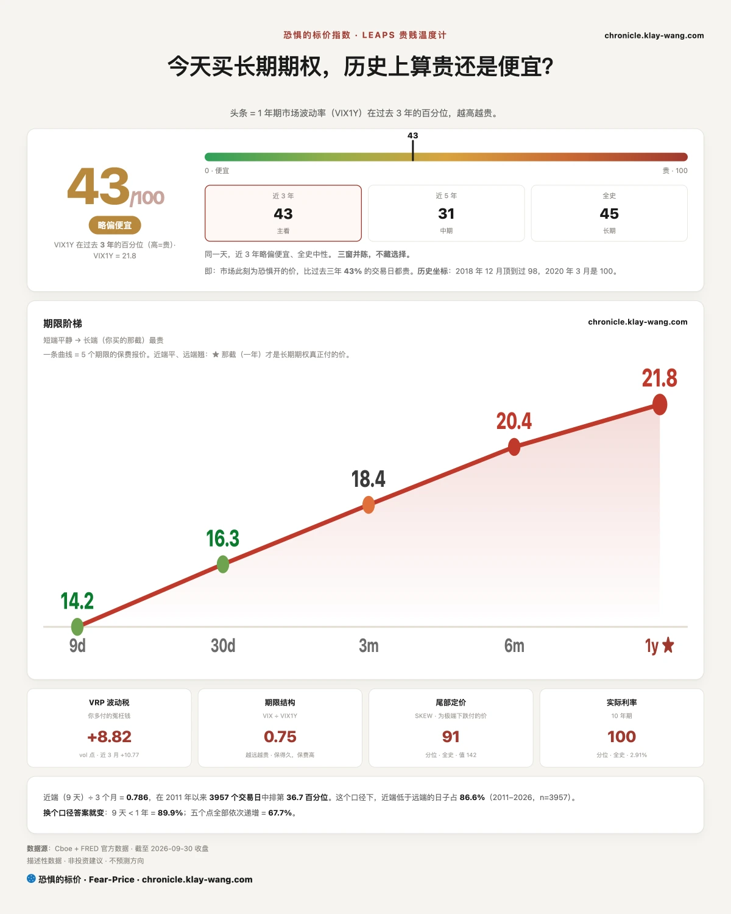
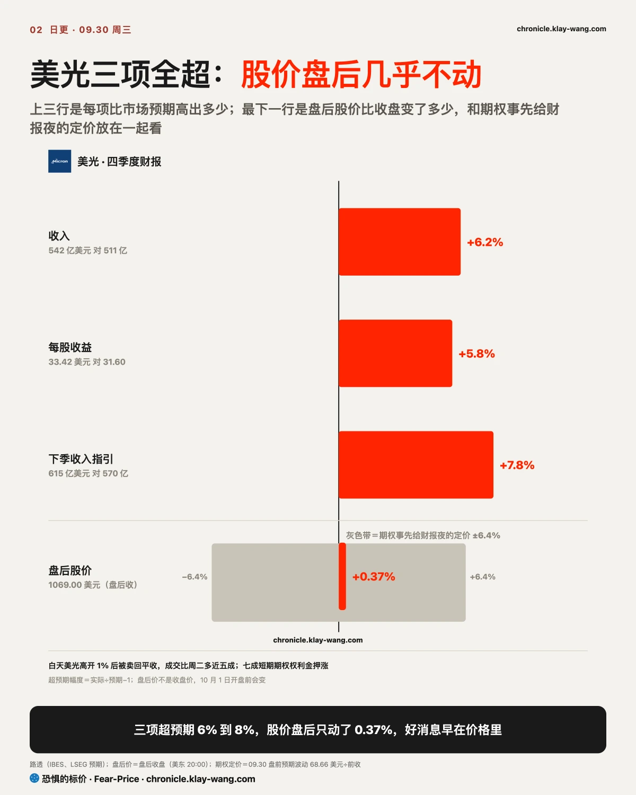
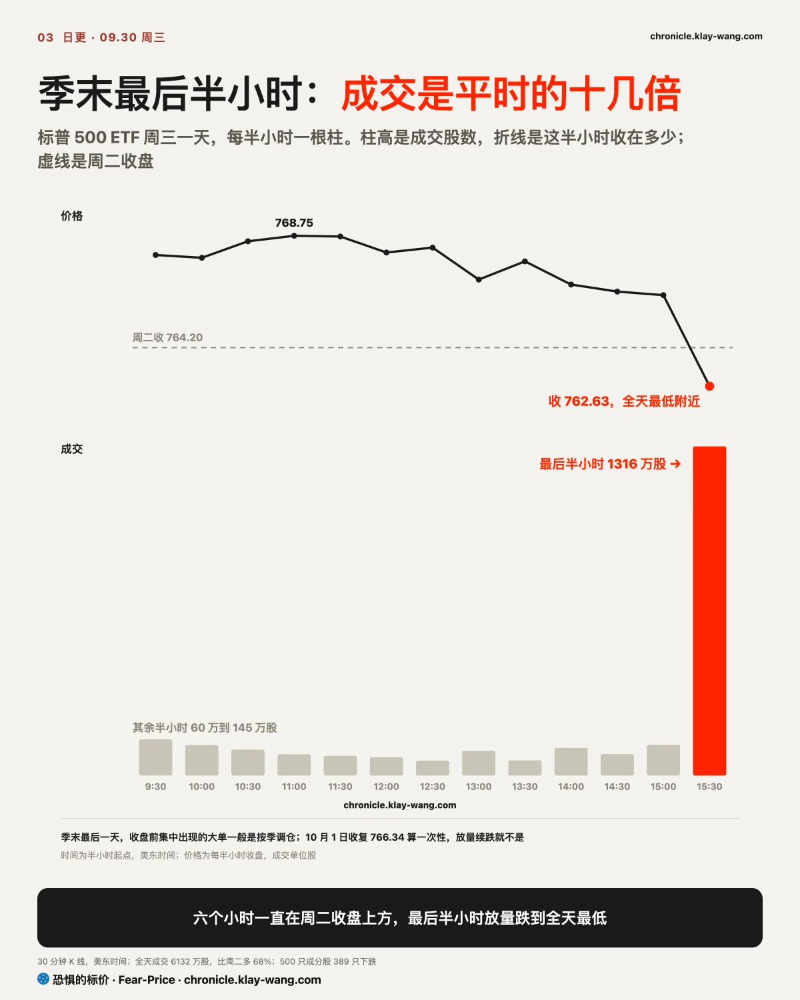
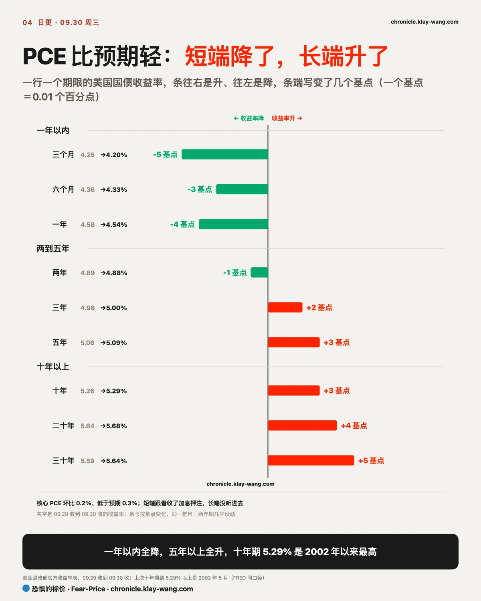

恐惧的标价指数（Fear-Price Index）· 2026-09-30 · 读数 42.9/100：一年期波动率 VIX1Y 为 21.80，处于近三年第 42.9 百分位，高即贵。逐日台账与口径 → chronicle.klay-wang.com · 转载注明：恐惧的标价指数 · Fear-Price
给美股买一年保险的价钱，周三从 40.3 分升到 42.9 分（满分 100，越高越贵），涨的这一点全来自尾盘那一跌，盘中一直是平的；如果 10 月 1 日收复尾盘的跌幅，这点涨也会退回去。放到整个九月看，它反而比月初便宜：利率升了半个百分点，股市没为这件事多掏保险钱。对你来说，现在配保护的价钱在过去三年里仍是中间偏下；手里如果是九月涨得多的科技股，现在用一年期保护锁住利润，比上个月这时候便宜。
K 指数 1.887，高于周二定稿的 1.799。K 越接近 1，说明越多人把担心变成真金白银买保护；现在离 1 很远，嘴上说担心的人多，真掏钱买保护的人少。按今天的恐贪读数，VIX 要升到 30.8 以上，K 才会跌破 1。历史在 chronicle.klay-wang.com/kindex，指数在 chronicle.klay-wang.com/fear-price。


美光周三盘后交出的成绩单几乎挑不出毛病：收入、每股收益都超预期，下季收入指引比预期高约 8%。盘后股价先跌到 1040 美元，又拉回到比收盘高 0.37%。期权事先按财报夜涨跌 6% 到 7% 定价，最后只动了零点几：全超预期却不涨，说明这些好消息早在价格里，美光九月已经涨了一成多。白天的走势提前说了这件事：美光高开后被卖回平收，成交比周二多近五成，财报前有人在高处卖出。你手里如果有美光，这份财报没给出新的上涨理由；10 月 1 日早上要看的是，白天七成押涨的期权还留下多少，留下得少，说明押财报的钱已经走了。个股页在 chronicle.klay-wang.com/t/MU。
同一个板块里，钱还在追英特尔：它周三涨 3.71%，收在全天最高附近，九月一共涨了三成多，一个月保险也在变贵。追进去的人一边追一边给自己买保护，这是还看涨、但担心回调的仓位。服务器 CPU 这条线有新的佐证：新思科技和亚马逊签了超过 10 亿美元的芯片设计授权，费用按亚马逊自研芯片的出货量抽成，大厂自己做芯片做得越多，卖设计图的越赚，新思当天涨 4.78%。英伟达那边的钱在往上挪：11 月到期的两档旧看涨和两档更高的新看涨各成交约 7 万张，张数一一对应，看起来是九月中那批押注把押的价位往上调，没有新钱进场；10 月 1 日早上的结算持仓，也就是第二天早上还留在手里的合约数，能确认这一点。

周三很多大票白天一直在涨，最后半小时集体跳水：谷歌、Meta、英伟达在这半小时各跌了 1% 左右，微软、苹果跌了 0.8% 上下，标普 500 ETF 一整天的涨幅全被抹掉，收在全天最低。你手里如果有这几只，要先分清一件事：这是有人在逃，还是到点必须执行的机械单。按当天的盘面看，主要是后者，季末调仓。
证据有三条。第一，跌多少按权重排：越是指数里权重大的票，这半小时跌得越多、成交越放大，谷歌、微软最后半小时的成交是平时半小时的四五倍；等权标普和小盘股只跌了三分之一个百分点。九月涨得最多的英特尔反而还涨了，它权重小，不在卖单里。真要看空出货，挑的是具体的票，不会按市值排队。第二，同一个半小时，长债和中期国债反而在涨，股票卖、债券买。这个季度股票涨、债券跌，组合里股票的占比被动变高，季末要卖股票、买回债券，方向正好对上。第三，标普 500 ETF 这半小时的成交是平时的十几倍，个股只有三到五倍，卖单是整篮子下的，而且当天没有任何新消息。
把跌幅放大的，是当天到期的看跌期权。英伟达 230、苹果 335、谷歌 350 这几档当天到期的看跌期权，周三成交从几万张到 30 万张不等。股价往这些价位靠近时，卖出这些期权的一方为了不让自己亏得更多，要跟着卖股票，越跌越要卖，最后英伟达收在 228.38、苹果收在 333.02、谷歌收在 344.08，都正好落在这几档下方。特斯拉是反过来的例子：它当天到期的 350 看涨成交了 20 多万张，收盘落在 350.68，尾盘反而小涨。
所以，周三的收盘价对大票来说要打个折。平常尾盘一小时最能说明谁在走，但季末最后一天混进了大量不看价格的单子。今天其他几处盘面也指向同一个方向：英伟达 11 月看涨期权里的钱在往上挪，没有在撤；给银行买保险的价钱在降；恐惧的标价那 2.6 分的上涨也全是尾盘这一跌带出来的。真正的检验在 10 月 1 日：开盘后很快收复这半小时的跌幅，就是一次性调仓，大票还撑得住；继续放量往下走，才说明有人借季末在出货。要留意的是底下：500 只成分股里 389 只在跌，等权对市值加权的比值掉到 60 天来最低，标普这一个月靠的是越来越少的几只大票，一笔机械单就能把它们砸到全天最低，说明白天愿意往上买的钱本来就薄。
尾盘跌得最狠的另外两类，和调仓无关，是各自的故事。券商和加密股是利好兑现：Robinhood 前一天刚发布能在用户离线时自动下单的 Agent，周三高开 5.5%，随后一路被卖，收跌 3.20%，成交是周二的 2.3 倍，放量、冲高、收在最低，是拉高出货的标准形状，早有仓位的人把发布会当成了卖点。支付和银行是慢慢失血：万事达、Visa 收在全天最低，银行股价也贴底，给银行买一个月保险的价钱却降了，卖的人不慌、拿着的人也没在逃，这种跌一般走得慢，还没到恐慌出清的时候。

周三公布的 8 月 PCE 是美联储最看重的通胀数，表面上好过预期：核心通胀同比 3.0%，预期 3.3%。但这一截落差大半是统计局改了法律服务、软件和投资管理三项的算法，7 月也被一起改成了 3.0%，同一把尺子量，通胀没降。真正比预期好的只有月度涨幅那 0.1 个百分点。同一份报告里，美国家庭花钱比挣钱快得多，扣掉涨价后的消费是 2025 年 3 月以来涨得最多的一个月。
债市把这份报告拆成两半来听。一年以内的国债利率全降，市场把 10 月再加息的押注收了一点，利率期货给的概率从五成降到 47%；五年以上的利率全升，十年期到 5.29%，比 2007 年的高点还高，是 2002 年以来最高。短端看的是美联储下一步，长端看的是借出去十年的钱要多少补偿：油价当天又涨了近 2%，消费在加速，明尼阿波利斯联储主席卡什卡利收盘后还说通胀太高，借长钱的人没有理由少要。
这笔补偿最后是借钱的人付钱，这对你最直接的影响就在这里。房贷、车贷、企业贷款跟着十年期走，通胀数据变好也降不下来，想等利率回落再借的，九月等来的是更贵的钱。手里有闲钱的，一年期国债约 4.5%，短期债在这种日子是涨的；长债还在跌，有人在押它反弹，11 月底到期、押长债一个多月涨回 7% 的看涨期权周三成交近 10 万张，是原有持仓的近 30 倍，但这批押注到现在还在亏。
我的判断是，推十年期上行的是期限补偿，不是加息预期，9 月 29 日这条判断周三又多了一天证据。如果 10 月 1 日收盘两年期收益率回到 4.92% 以上、并且涨得比十年期多，就站不住。
9 月 16 日立案时写过，债市里有一批钱在押利率见顶、长债反弹。按当时的判据，这个判断成立：长债基金跌破 80，押反弹的看涨期权非但没撤，持仓还从 9 月 17 日的 15.2 万张加到 9 月 29 日结算的 20.6 万张。押注本身到今天是亏的，那档看涨周二收盘只值 9 美分；押的人在往下挪价格、往后挪时间，没有认输。对你来说，这说明长债的跌势还没打到让押反弹的人投降那一步，还看不到见底的迹象。
9 月 9 日引过五条外部说法，说芯片可能重新抬头，月底对下来对了三条：季节性、动量、芯片波动率回落都应验了，半导体 ETF 9 月 15 日以来涨了 12%；存储链集体突破没有应验，只有美光比 9 月 9 日高；对冲基金加杠杆没有公开数能核，无法判定。
还有两条 10 月 1 日开奖，按今天的数都还站得住。利率冲击还没传到信用：银行的保险没变贵，AI 相关公司发债多付的利息涨了一点，离推翻线还有 8 个多基点，方向在往那边走。存储缩量下跌是没人接：美光财报前放了量，但收平，没触发。9 月 29 日写过 Meta 守不守得住 727.50，周三收在 725.18，跌回去了，但成交比周二少两成，是没人追，下一步看它能不能缩量站回去。
手里有长债或长期债券基金的：通胀数据变好也没让长期利率回落，价格还在跌；押反弹的人在加仓，但还没赚到。要稳，一年以内的国债和短债在这种日子是涨的。
手里有大科技股的：周三尾盘的跳水大多是季末机械单，别把这个收盘读成转向。10 月 1 日开盘后第一个小时看能不能收复，收不回来，说明卖的不只是调仓的钱。
手里有芯片或存储股的：美光的好消息已经在价格里；英特尔还在被追，但追的人自己都在买保护，说明大家知道它涨多了。
手里有券商、支付或银行股的：Robinhood 发布会后被拉高出货；支付和银行是慢慢跌、没人慌，这种跌不急，也不容易马上止住。